Scientific Classification
| Kingdom | Animalia | Animalia | Animalia |
|---|---|---|---|
| Phylum | Chordata | Animalia | Animalia |
| Clade | Archosauria | Animalia | Animalia |
| Clade | Avemetatarsalia | Animalia | Animalia |
| Clade | Dinosauria | Animalia | Animalia |
| Clade | Saurischia | Animalia | Animalia |
| Clade | Sauropoda | Animalia | Animalia |
| Clade | Neosauropoda | Animalia | Animalia |
| Clade | Macronaria | Animalia | Animalia |
| Clade | Titanosauriformes | Animalia | Animalia |
| Clade | Titanosauria | Animalia | Animalia |
Taxonomic note: Titanosauria is the dominant sauropod clade of Kaimere. All sauropods currently recognized from the Known World, as well as those of the eastern continent of Kairul, are considered titanosaurs. The Jurassic Islands possess their own sauropod lineage whose ancestry remains disputed, making them the principal exception to the otherwise universal dominance of Titanosauria among Kaimeran sauropods.
01 · INTRODUCTION
Overview
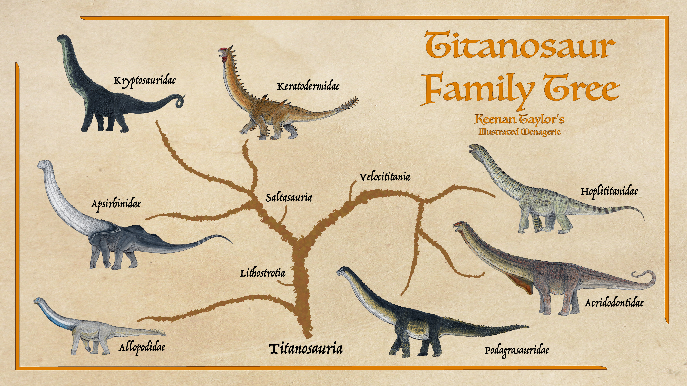
Titanosaurs are the dominant surviving radiation of sauropod dinosaurs on Kaimere and constitute the largest and most ecologically consequential terrestrial herbivores on the planet. They are characterized by the fundamental sauropod body plan of an enormous, elongate body, relatively small head, long neck, long tail, and four columnar limbs, but have diversified into an extraordinary range of ecological forms. On Kaimere, titanosaurs occupy environments ranging from dense tropical forests and Titan Gardens to seasonal woodlands, prairies, mountains, and wetlands.
With the exception of the disputed sauropod radiation of the Jurassic Islands east of Kairul, all sauropods inhabiting the Known World and Kairul are titanosaurs. Their evolutionary history on Kaimere is considerably more complicated than a simple continuation of the Earth lineage. Multiple harvests introduced titanosaurs at different points in Kaimere's history, after which they diversified into endemic lineages that have no direct equivalent on Earth.
Titanosaurs are particularly successful because of their ecological versatility. Rather than becoming extremely specialized toward one particular feeding height or vegetation type, they generally occupy an intermediate position among sauropod feeding strategies. They are capable of exploiting low vegetation, shrubs, trees, and high foliage, allowing them to persist through substantial environmental changes. This generalized strategy, combined with their enormous size, rapid growth, efficient respiratory system, and reproductive potential, has allowed them to repeatedly recover from major extinction events.
Their ecological influence extends far beyond their role as herbivores. Titanosaurs are major ecosystem engineers. Their feeding removes vegetation, their enormous feet compact and disturb soil, their movements create trails, their dung redistributes nutrients, and their deaths provide enormous quantities of organic matter to scavengers and decomposers. In the Known World, their influence is so extensive that the forests shaped by their activity are known as the Titan Gardens.
The modern radiation is divided into three major evolutionary lines. The allopods represent an early-diverging lineage that separated from lithostrotian titanosaurs relatively early. The second major branch consists of saltasaur-derived titanosaurs, including the apsirhinids, kryptosaurs, and the kipourotitans. The third is the Velocititania radiation, containing the hoplititans, podagrasaurs, and acridodonts. The exact relationships among these groups remain the subject of considerable debate.
02 · DEEP TIME
Evolutionary History
The evolutionary history of titanosaurs on Kaimere ultimately begins with the broader sauropod radiation. Sauropods had already become one of the dominant herbivorous dinosaur groups during the Mesozoic, repeatedly occupying the largest terrestrial herbivore niches. Their ability to survive major climatic changes and extinction events allowed several lineages to persist even as other sauropod groups disappeared.
During the Jurassic and Early Cretaceous, sauropods were particularly successful throughout the tropical and subtropical regions of Kaimere. The Second Mesozoic Dynasty, beginning around 145 million years ago, was especially important for sauropod evolution. For approximately thirty million years, sauropods were among the dominant megafauna, occupying forests and floodplains alongside allosaurs, ceratosaurs, stegosaurs, ornithopods, and ankylosaurs.
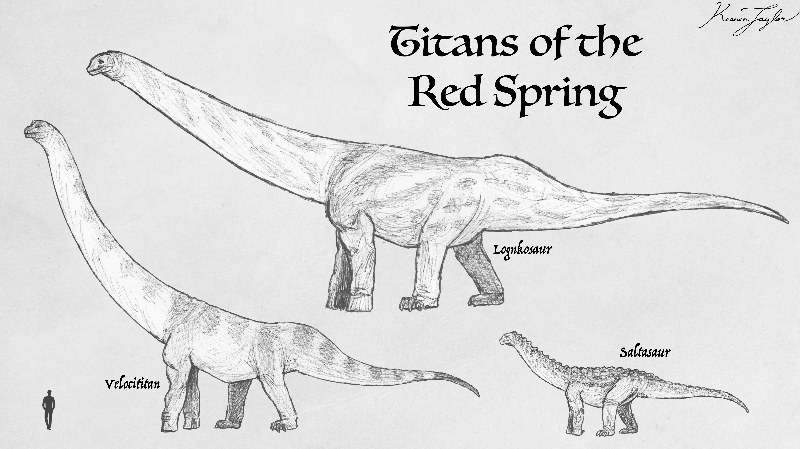
The later Cretaceous brought additional harvests from Earth and substantial turnover in Kaimeran dinosaur communities. Titanosaurs were among the groups repeatedly introduced or reinforced during these harvests. During the Red Spring Dynasty, approximately 85 — 70 million years ago, small saltasaur-like titanosaurs were introduced to Kaimere. One of these lineages would ultimately become the ancestor of the keratoderms.
The titanosaur radiation did not remain evolutionarily uniform. Different populations became isolated as continents separated, climates changed, and the Portal shifted its territory. Kairul in particular became a major center of titanosaur evolution. Several lineages that are now extinct elsewhere survived there, while others underwent substantial diversification during the Late Cretaceous and Cenozoic.
One of the most important groups was the Aspsirhinidae. These titanosaurs appear to have originated during the Early Cretaceous and subsequently maintained a remarkably conservative evolutionary history. Their descendants survived the Dynastic Extinction and remain among the most geographically widespread titanosaurs on Kaimere. Their survival appears to have been closely related to ecological generalism. Rather than becoming dependent upon a single type of habitat or plant community, as happened in several specialized titanosaur lineages, aspsirhinids were able to exploit a wide range of vegetation. They subsequently occupied regions extending from western Arvel through northern Ni'Khar and into Kairul. Their descendants include Apsirhinus, among the most widespread titanosaur genera of modern Kaimere.
Other titanosaurs followed very different evolutionary trajectories. Shortly before the Dynastic Extinction, the ancestors of the velocititans appear to have undergone an important radiation in Kairul. The group subsequently diversified into three major families: Hoplititanidae, Acridodontidae, and Podagrasauridae. The name Velocititania refers not primarily to locomotion, but to the unusually rapid growth characteristic of many members of the group. In productive environments, some velocititans could grow at extraordinary rates, allowing populations to recover rapidly from mortality and permitting individuals to reach enormous sizes in relatively short periods. This became particularly important in the tropical forests of Kairul, where food was abundant throughout much of the year.
The Dynastic Extinction approximately fifteen million years ago was one of the greatest turning points in titanosaur history. The geological and volcanic upheaval devastated the Known World and eliminated nearly all of its surviving sauropods. Ni'Khar, in particular, was left without a major native sauropod population. The extinction created an enormous ecological opportunity.
At this point, the titanosaur lineage that would become the keratoderms was already established in Kairul. Their ancestors were relatively modest animals compared with the giants that would eventually evolve from them. They had survived in an environment where other sauropods and large herbivores still competed with them, limiting their ecological expansion. The destruction of the Known World's sauropod communities changed this completely.
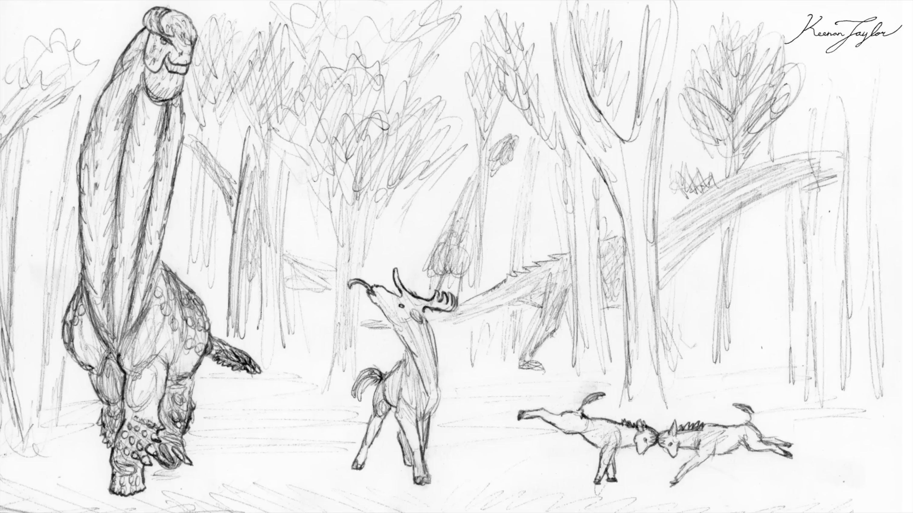
Approximately twelve million years ago, keratoderms crossed the marine barrier separating Kairul from Ni'Khar. They entered a continent in which sauropods had effectively disappeared and where large mammalian herbivores were undergoing their own radiation. Thescelosaurs were widespread, while chalicotheres and other mammals were increasing substantially in size. The newcomers rapidly expanded.
Their success was not simply a consequence of being larger than their competitors. They reproduced rapidly, exploited vegetation efficiently, and modified their surroundings as they fed and moved. Within a relatively short period, they became the dominant large herbivores across much of Ni'Khar. This ecological transformation was profound. Forests that had previously been relatively closed became increasingly open as titanosaurs repeatedly moved through them and consumed vegetation. Their trails became persistent pathways. Their feeding redistributed nutrients. Their dung fertilized soils and transported seeds. Their deaths provided enormous concentrations of nutrients for scavengers, decomposers, and plants.
The environments created by these animals eventually became known as Titan Gardens. The emergence of Titan Gardens was one of the most important ecological events of the late Miocene Known World. Rather than simply occupying an existing ecosystem, the titanosaurs effectively created a new one. Plant communities adapted to their presence, and some species became particularly successful because they benefited from the disturbance, nutrient redistribution, and seed dispersal generated by the giants. Their influence became so great that titanosaur expansion contributed to subsequent ecological instability and was associated with further Portal harvests. The titanosaurs had effectively become one of the major forces controlling the environment in which the Portal operated.
The Radiation of the Keratoderms
The keratoderms subsequently underwent their greatest evolutionary expansion in the Known World. Five species survive there today, although several additional species disappeared during the intervening millions of years. Their evolutionary history demonstrates the importance of competitive release in gigantism. In Kairul, where other titanosaur lineages remained abundant, keratoderms generally retained more modest ecological roles. In the Known World, however, they encountered an environment almost completely lacking in competitors of comparable ecological scale.
They responded by becoming progressively larger and more influential. This divergence eventually produced the enormous modern garden tillers. The largest species are capable of reaching sizes far beyond those of their Kairulan relatives. The contrast is particularly striking between the Known World keratoderms and their Kairulan cousins: the same broader lineage remains relatively modest in the continent where numerous other titanosaurs compete with it, while its descendants became giants after entering a landscape with little competition.
The evolutionary history of the keratoderms was nevertheless not uninterrupted. At least two lineages became extinct before the modern era. One prairie-adapted species disappeared after the spread of houze grass approximately 250,000 years ago, after which its ecological role was taken over by the Kairulan modotan. Other populations were lost during periods of climatic cooling, while the Qajarith keratoderm was deliberately exterminated by the First Children. Despite these losses, the lineage remains extraordinarily successful.
Titanosaurs Beyond the Known World
The Known World represents only a fraction of modern titanosaur diversity. Kairul is the principal center of titanosaur evolution and contains several endemic clades absent from the Known World. The difference between the two regions is particularly important for understanding titanosaur evolution. Kairul retains numerous competing sauropod lineages, including the highly diverse velocititans. As a result, no single titanosaur group has been able to dominate the continent to the same extent as the keratoderms of the Known World.
The result is a much more diverse ecological community. Aspsirhinids are widespread generalists, while the velocititans include rapidly growing forms specialized to productive tropical and subtropical environments. Kryptosaurs occupy more restricted regions, while additional Kairulan lineages have evolved into highly specialized forms associated with particular forests, prairies, and seasonal environments. The modotan represents one of the most extreme examples of titanosaur gigantism. Its ancestors originated among the Kairulan keratoderms, but the lineage achieved its greatest size after expanding into the northern regions of Ni'Khar, where competition was comparatively limited. The descendants eventually returned to Kairul, carrying their enormous size with them. The modern modotan is consequently one of the largest terrestrial animals known from Kaimere.
Other Kairulan titanosaurs demonstrate the opposite evolutionary strategy. The conetail keratoderm, for example, remains relatively modest in comparison with the giants of the Known World. Its environment contains numerous large predators and competing sauropods, preventing the lineage from undergoing the same ecological expansion as its relatives farther west. This makes Kairul particularly valuable to paleontologists because it provides an approximation of the ecological conditions under which the ancestral keratoderms themselves lived.
The Anchored Period and Modern Titanosaurs
Approximately six million years ago, the Known World entered the Anchored Period, a relatively stable interval characterized by high productivity and limited Portal activity. By this point, titanosaurs were already among the most important megafauna of the region. Their continued dominance coincided with the development of the mature Titan Garden ecosystems. The forests were not static environments but continually regenerated landscapes shaped by titanosaur movement and feeding. Other herbivores occupied niches within these environments, but the largest-scale ecological effects remained concentrated in the hands of the titanosaurs.
The climatic upheaval approximately 1.5 million years ago disrupted these communities. Rapid changes in temperature and seasonality caused widespread extinctions and triggered another major harvest. Titanosaurs survived the upheaval, although several regional lineages were lost. The subsequent arrival of new fauna produced another period of ecological restructuring. Some introduced herbivores competed with titanosaurs, while others became specialized around the environments that the giants created. The modern titanosaur fauna is therefore the product of several successive filters: Cretaceous harvests, the Dynastic Extinction, continental isolation, competitive release, climatic change, and repeated Portal introductions.
03 · SPECIES ACCOUNTS
Known Diversity
The following accounts document representative felids recorded in the encyclopedia. Select a species to consult its individual natural history and descriptive account.
Arak'tak

Oreomanteus aractak
The mountain sauropod arak'tak is the strangest of the lot. Many sauropods have scales along the bottom of their feet. This species takes this to an extreme, with soft rubbery keratin growing between the scales to afford tremendous traction alongside the gripping scales. The versatile stance of sauropods is also exaggerated in these titans, able to walk with narrow steps in a single line or almost two meters apart depending on the demands of the terrain. This allows them to climb with allegedly supernatural prowess in search of food. They are, averaging 3 — 4 tons, among Kaimere's smallest mainland sauropods.
Read species article →Blue Titan
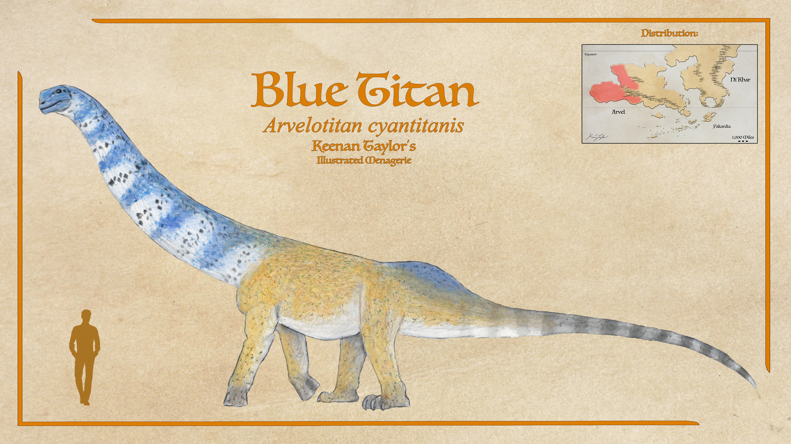
Arvelotitan cyantitanis
The largest animal in the forests and its surrounding desert of the Timugai Badlands is the blue titan. Like Jessie's camel, they have a very keen sense of smell, using it to find oasis out in the desert once the monsoon season ends. They aren't as cursorial as camels, but with ample fat stores of their own enabling them to go a month without drinking if they have to, and their claws meaning they can access ground water other herbivores can't, they can often find themselves doing just fine. In fact, subadults often prefer to remain out in the deserts rather than return to the forest when the monsoon arrives. They weigh up to fifteen tons, but take over twice as long to reach this size than Kipourotitan does to more than double their mass, a consequence of having less reliable food. They can make short work of foliage in even a small oasis, and since they prefer plants like palm leaves that other herbivores turn down in favor of dates, citrus fruit, and grasses, Arvelotitan often have plenty of food even if they are late to the party.
Read species article →Collared Humptail
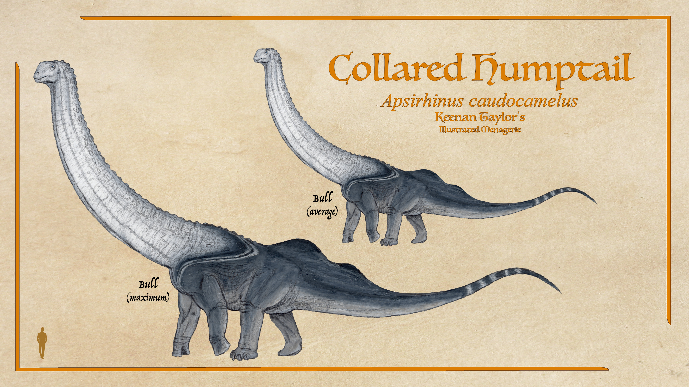
Aspirhinus caudocamelus
Their largest species of the Apsirhinids is the collared humptail. Endemic to Kairul's Northwood forests, they feed on a diverse range of conifers, deciduous leaves, ferns, and horsetails. A generalist diet serves them well, and they are able to make do on whatever is available. They can feed alongside the high browsing modotan or the lower-browsing pachycephalosaurs and thescelosaurs with which they share their habitat, alongside other species of Kairul-endemic titanosaur clades. Though many titans store fat at the base of their tails to help endure lean seasons, and has been suggested to play an important role in signaling health to potential mates, only the collared humptail has two of these humps. The reason for this deviation from the norm is unknown.
Read species article →Spurflank Titan
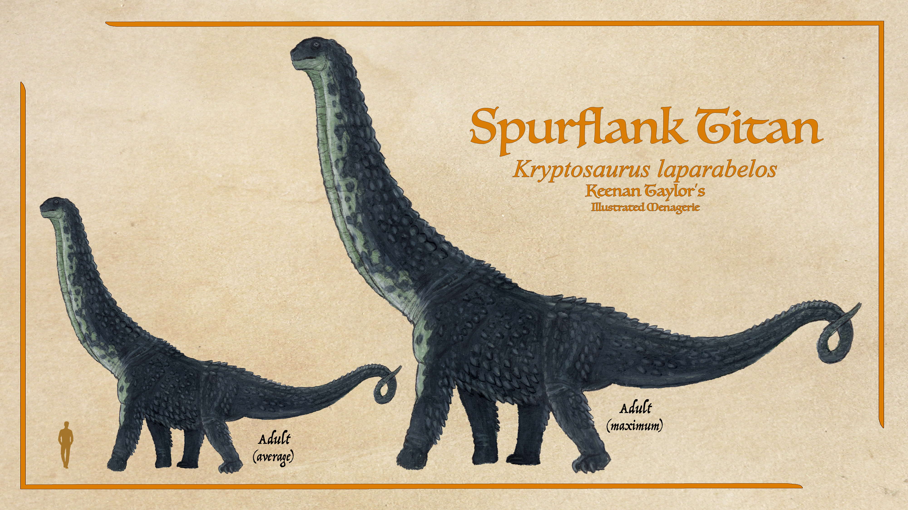
Kryptosaurus laparabelos
Of the native Kryptosaurs, the most common is the nominative Kryptosaurus laparabelos, or spurflank titan. This is a species of middling size: between 20 and 30 tons on average, though enormous specimens are attested in the southern forests across this isolated peninsula. Like the Aspirhinids, they are a generalist species, being mixed feeders content with a wide range of food, both low and high. Spurflank titans get their name from the large scales on their bodies especially the lower half of the torso. Though the spikes over their hips are osteoderms and larger in females, most of their spikes are feature scales with no bone cores. Study has been minimal, but it does appear this clade are unusually tolerant of each other.
Read species article →Common Titan

Kipourotitan keratodermus
The common titan or Arvelith keratoderm is the largest terrestrial animal found in Arvel. Like most of their lineage of titans, common titans grow around a ton each year. Fast, but not nearly as swift as some titans in Kairul. Instead of fast growth, they rely on armor for protection during their early years. Each female lays dozens of eggs every year, and these young stand a better chance of survival than other titan clades thanks to their heavy investment in armor. It means they can't afford to grow as fast, so they aren't considered immune to predation until well into their third decade whereas hoplititan of Kairul reach such dimensions by around 15 years. At any given point, a vast majority of their population are immature individuals. This population distribution may seem odd compared to our understanding of megafauna herds, but it's fairly typical of sauropods.
Read species article →Edotan
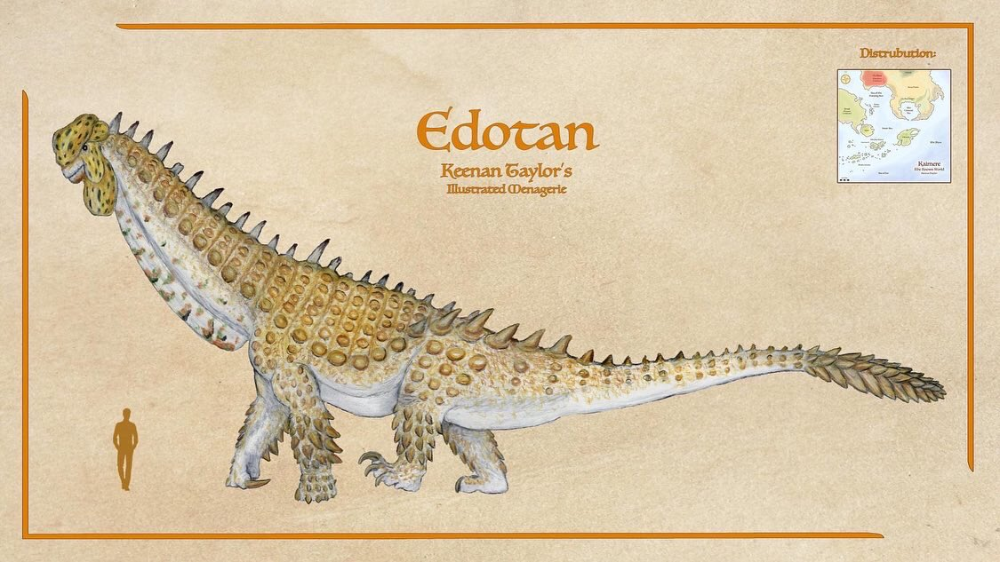
Kipourotitan sp.
In the vastly unexplored southwestern forests of Ni'Khar, the forest titan is called the edotan by indigenous peoples. They have lighter hide but in general are quite similar, with yellow crests instead of orange being their most significant diagnostic trait. However, their songs are quite different, typically favoring more dynamics than the raw volume of common titan songs. They also default to higher notes. Their fundamental process is the same, however. They are primairly restricted to Ni'Khar but will occasionally appear in Arvel near the northern straits from the most western point of the Iraband Penninsula in Ni'Khar. There are some strong southeastbound currents and the journey is around 300 miles, but there are enough islands that a few males of each species cross to the neighboring continent every year.
Read species article →Jurazhent
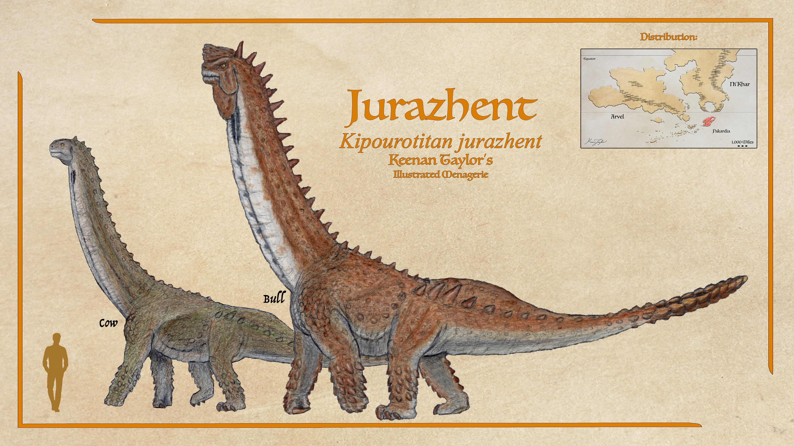
Kipourotitan jurazhent
Most divergent and isolated species of Kipourotitan is the jurazhent, a species exclusive to Pakardia. They are the smallest of the three. However, their bones are least pneumatized and their density makes them quite powerful for their size. It is believed that this general reduction in size, with the largest males weighing twenty tons, may have been prompted by the comparatively small island on which they live, although food is plentiful enough that they can sustain themselves. They are the largest animal of Pakardia. Of the genus they are also considered the most aggressive and violent. Perhaps because of their smaller size they are better able to run down and kill predators that pose a threat to their nests. They are not as proficient swimmers as their mainland cousins and the currents take them east, meaning that common titans can be brought to Pakardia on occasion, but jurazhent almost never voyage, and when they do, they are washed far from Arvel.
Read species article →Wawakoku
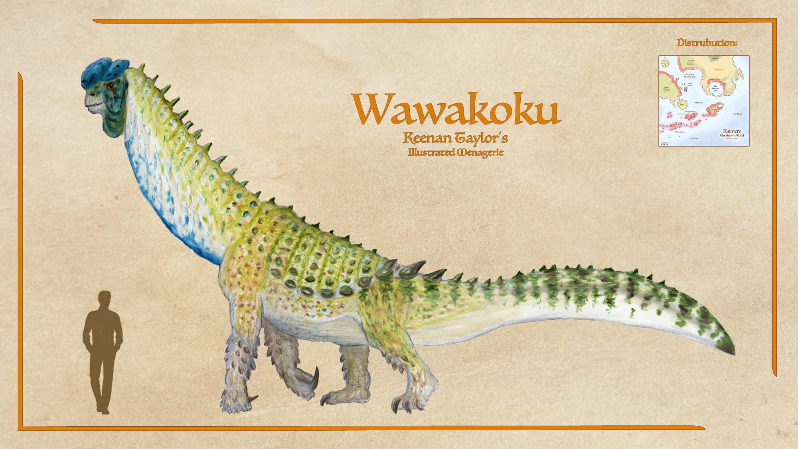
Scientific placement to be confirmed
The wawakoku is arguably another species of keratoderm, though not of the genus Kipourotitan. Wawakoku is a bit more distant but closer to Kipourotitan than the modotan. Their skeletal anatomy is nearly identical save for a sculling tail. They are fairly small, rarely weighing over eight tons. They have taken the buoyancy of titanosaurs to its logical conclusion, being proficient floaters. They cannot strictly speaking swim, but their tail helps keep them on course. They came to the Known World around ten million years ago and were fairly rare coastal creatures. They really came to their own around six million years ago, when the inland sea took the form it has today. In these shallow seas there are thousands of islands scattered throughout. Although a herd of these five to ten ton sauropods will fully deplete a small island of its foliage, what they leave behind is a fertilized smorgasbord of understory.
Read species article →Modotan
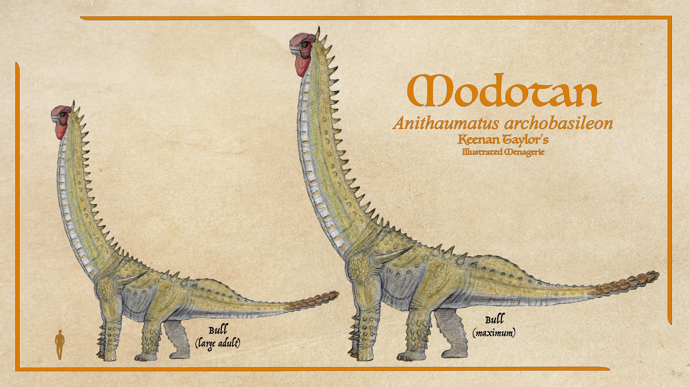
Anithaumatus archobasileon
The most recent arrival to the Known World from Kairul and by far the largest Kaimeran titanosaur is the modotan. This enormous animal regularly exceeds a hundred tons. The modotan, like other keratoderms, keeps its neck elevated at rest. Indeed when its walking, the neck will often recurve back so much of its length is perpendicular to the ground. It is believed this is more efficient as it does not need to spend energy holding it out like other sauropods do. It is also thought this posture may be easier on their heart than if it were held out. While feeding it will readily extend its neck out depending on where its feeding opportunities are. Adults can be so big that they can more efficiently travel across land between patches of other plants. With large males exceeding a hundred and thirty feet long, adult Modotan have nothing to fear from predators. Subadult uktan will sometimes mob an injured animal, but once they pass fifteen tons at around three years of age, modotan do as they please. They do not live in herds like their smaller cousins, with most adults being social and occasional small groups of related females.
Read species article →Conetail Keratoderm
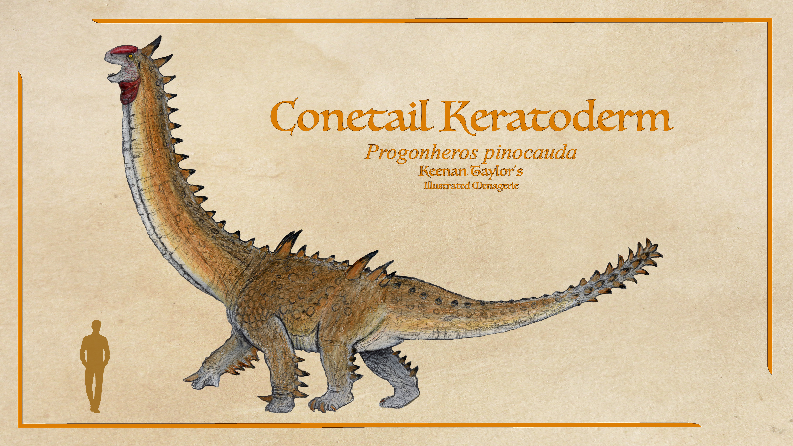
Progonheros pinocauda
The conetail keratoderm is an abundant and widespread sauropod in western Kairul. Though larger than their ancestors that managed to survive the Dynastic Extinction, they are dwarfed by their kin in the Known World. Keratoderms only got large in the absence of competition. In Kairul, where velocititans are the dominant clade of titanosaurs, keratoderms are much more humble in dimensions and ecological impact. While the armor of known world sauropods is mostly for mineral storage in adults, who are too large for native predators to bring down, in Kairul, there are plenty of large predators and the likes of Progonheros depend on their armor for defense as much as nutrients to shell their eggs or endure famine.
Read species article →Brewster's Bladeback

Styracopygus brewsteri
Compared to the Known World, keratoderms are a lot more genetically diverse in Kairul where this clade originated. The Brewster's bladeback is one such animal. These keratoderms lack the tail clubs or studs of Progonheros and most Known World keratoderms. While cows have moderate spikes along their hips, the dorsal osteoderms of males form a pair of tall rows which can be over a meter long in the largest specimens. These spines are laterally compressed and quite sharp along the edges. In cows, the osteoderms are shorter and wider. Much like Known World keratoderms, their bone cores are important sources of minerals and egg laying to a good degree that they are often entirely hollow, save a thin layer of bone connected to the keratin in older females.
Read species article →Hercules Titan
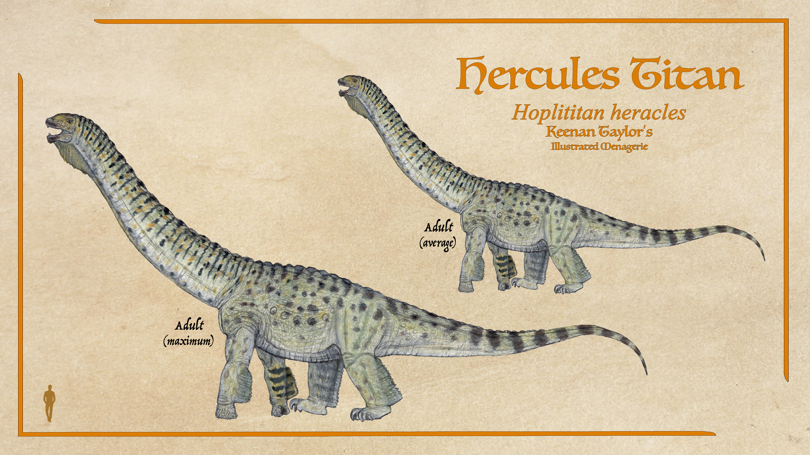
Hoplititan heracles
Hoplititan is the most famous and best known genus of the Hoplititanidae. They are named for the phalanx formation these animals form when predators near. Mature males tend to live on their own and are so large they have no need of this social defense if in good health, but not only are females smaller, they often live in mixed herds with subadults, which can be more vulnerable. Bachelor herds also form ranks, though not as complex. Living in forests can make it hard to assemble, but once they form ranks, even their specialized predators are often wary. The Hercules titan is among the largest of the clade, and also the most abundant species in the titan gardens. Their growth does slow after maturity, but males will sometimes still put on half a ton each year. Cows rarely exceed twenty tons, but bulls will keep on as long as there is sufficient food. Their biggest specimens are estimated to approach a hundred tons, making them among Kaimere's largest titanosaurs.
Read species article →Red Legionary

Legionarius populus
Hoplititan is not the only genus in this family, and some don't nearly approach their size. The red legionary is another common species in these tropical titan gardens that grow rapidly. However, their growth slows around eight to ten tons. Both sexes are around this size, though males average slightly larger. They live in mixed sex herds. Being smaller means they are better able to maneuver into phalanx formations, and that is where this genus truly shines. They are still large enough to reliably fend off most threats as adults, but with the aid of a herd, even a determined pair of chaku ka bawe can be turned away. All titans are able to stand on their hind legs. If they could not, males would be incapable of mating. In some taxa like the back-heavy Legionarius, especially when young or among smaller species, this bipedal posture can be comfortably and efficiently maintained for extended periods of time, sometimes up to an hour in smaller individuals. This helps greatly expand their browsing range. It is also the posture they take when forming ranks if space permits.
Read species article →Lilliputian Legionary

Legionarius lilliputensis
A species of Legionarius is found on an island far into the interior ocean of Kairul. This population is quite closely related to the mainland populus species, and is thought to have been carried out to this island within the past million years or so. Like many island megafauna, they have shrunk to a fraction of their mainland size to demand fewer resources and because there is no terrestrial predator large enough to threaten them older than perhaps a few weeks old. Adults are usually around a ton. It was initially suggested they may have swum out to this habitat as adults. Titanosaurs are so hollow and buoyant that they can remain afloat without any effort. However, being over a thousand miles from the mainland and not far from one of the main currents, another proposal has been made: perhaps a number of hatchlings were on rafts of vegetation that floated from the mainland to this paradise. Whatever their origin, an estimated population of six thousand of these Lilliputian titans are the only terrestrial animal larger than a possum in this secluded eden.
Read species article →Goldspotted Caudipelt
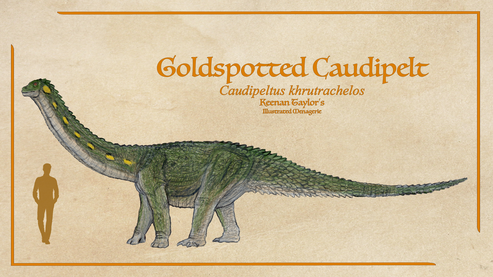
Caudipeltus chrytrachelos
Another small hoplititan is Caudipeltus, so named for the abundant osteoderms concentrated at the base of the tail. Though not as tiny as Legionarius lilliputensis, they are still small for titans, averaging around three tons. They grow fast, reaching maturity in three years. Unprecedented for a sauropod. With laterally compressed bodies compared to the otherwise wide typical build for titans, they are able to slink through dense vegetation of these verdant jungles, thereby avoiding detection from most predators large enough to pose a threat. They live in herds and will assemble in formation if they are able, but as they tend to live in dense brush, it is often too late to form up when an abelisaurid or some other threat launches an attack. Like all Hoplititans, Caudipeltus retains phalanges which flare out, helping them keep their footing in the soft soil of their rainforest homes. Larger hoplititan titan species have to keep their hands compact and tight for load bearing, but an advantage of their smaller size is that Caudipeltus is able to benefit from longer fingers and therefore more confident steps in wet soil.
Read species article →Northern Acridodon
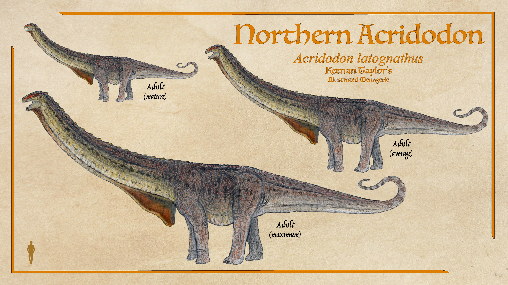
Acridodon latognathus
Though many sauropods incorporate some grass in their diet, even the gymnosperm-specialist keratoderms, the acridodonts are the only specialized grazers. The clade is found in both north and south, though Acridodon latognathus is mostly restricted to northern Kairul. In southern Kairul, there are multiple similar grazers, though their designation as different species or as subspecies of Acridodon latognathus depends on which researcher you ask. Acridodon latognathus are specialized in the abundant houze grass, though as prairie grass is more diverse in Kairul than in the Known World where it has taken over as an unchecked invasive species, the acridodonts will readily graze on other flora. Velocititans all have their teeth concentrated in dense rows at the front of their mouths. They shed their teeth every few weeks, usually losing the whole row at once. All sauropods have extreme enamel quantity to keep their teeth hard, but velocititans have the highest enamel percentage of any vertebrate tooth, something they are able to achieve thanks to small teeth in small jaws. The new teeth form a sharp cutting edge on the front of both jaws.
Read species article →Sauropotamus
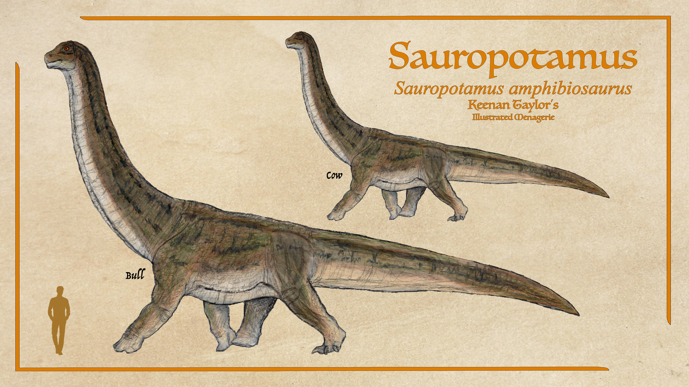
Sauropotamus amphibiosaurus
Despite their depiction in early paleoart, sauropods as a general rule are not fond of wetlands, instead preferring solid ground. Many are so buoyant from their hollow bones and air sacs that they can't even submerge their necks enough to grasp wetland vegetation. Juveniles are an exception, often starting off in marshes, but once they reach a ton or so, their load-bearing adaptations make wetlands difficult to traverse. Keratoderms of the Known World take this to an extreme, rarely venturing even near wet soil and getting most of the water they need from the plants they consume. An exception to this rule is the closest relative of Acridodon: the Sauropotamus. Alongside their saltmarsh abundance, this herbivore thrives in the wetland habitats of the equatorial jungles. Their bones are dense and the air sacs throughout their body are minimal to better allow them to submerge. It has been suggested that this density and loss of air sacs has put a cap on their size, as they have space and food to grow larger.
Read species article →Common Goutfoot
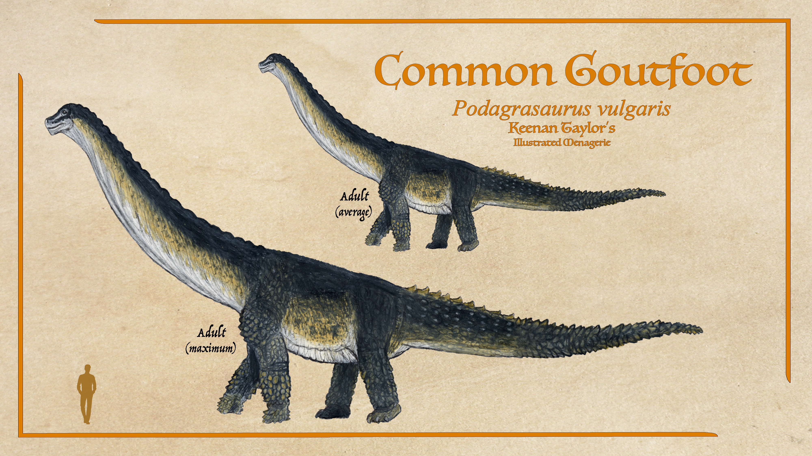
Podagrasaurus vulgaris
Podagrasaurus is a common titanosaur on the southern hemisphere of the western peninsula, thriving in the Fenrir Prairie as its most common sauropod. Podagrasaurus are hunted not only by bokodu and chaku ka bawe, but by the entelodont riders of these prairies. They have also on occasion been raised and even tamed enough to ride. They are skittish and don't take well to combat, but their mere presence with a fortress on their back is enough to inspire terrifying legends. Unlike the hoplititans of the tropics, Podagrasaurus does not enjoy abundant year-round vegetation. On the Fenrir Prairie where they are most abundant, they are mixed feeders, packing in a range of tree stands and prairie grass.
Read species article →Skyneck Jagannath
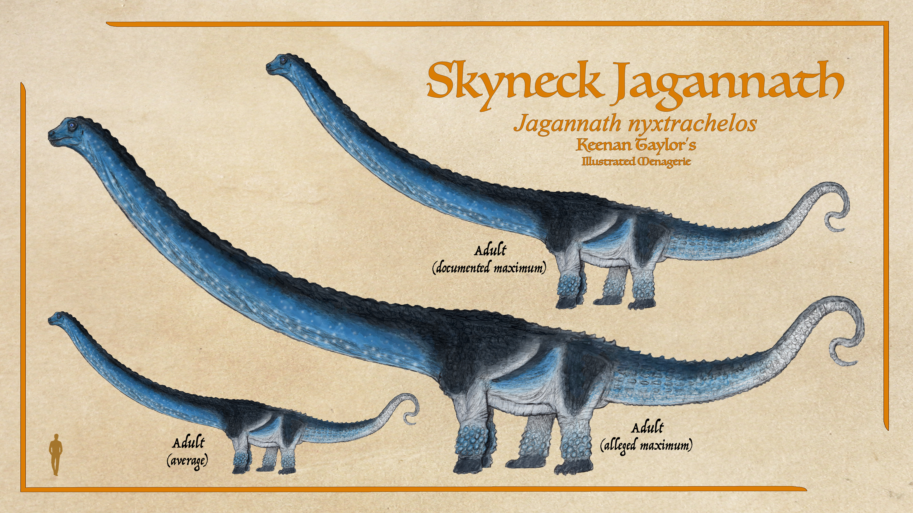
Jagannath nyxtrachelos
The skyneck jagannath is a podagrasaur that recently arrived from the west. They are, as is typical of their family, quite violent with each other. Females for nest sites, males for mating rights. Much more rapid growth coupled with their highly derived feeding apparatus means this species has quite successfully muscled their way into the southern Reliquary and Southwood, becoming more abundant than all native species combined. They are also remarkable as having among the longest neck of any animal in Kaimere, and the longest neck proportionally of any Kaimeran sauropod. The kadanuk and the modotan both provide competition in absolute length, but a giant sighted from a research outpost was said to approach the size of the largest modotan with a neck far longer. This specimen was never sighted again and certainly not verified, but if true, it would indeed have the longest neck of any Kaimeran animal.
Read species article →04 · CLASSIFICATION
Taxonomic Notes
The taxonomy of Kaimeran titanosaurs remains considerably more uncertain than their modern ecological importance might suggest. The broad relationships among the major lineages are still debated, particularly because several groups diverged early in their history and subsequently experienced extensive geographic interchange. Nevertheless, the current working classification recognizes three major titanosaur lines.
The first is the allopod lineage, which diverged relatively early from Lithostrotia. The allopods are consequently treated as the principal titanosaur lineage outside the two major derived radiations. The second major branch belongs to Saltasauria, while the third is conventionally referred to as Velocititania.
The Kaimeran Saltasauria include the Apsirhinidae, Kryptosauridae, and Kipourotitanidae. The Apsirhinids are widespread generalists represented by animals such as Apsirhinus and Arvelotitan. Kryptosaurs occur primarily in eastern Kairul and include mixed-feeding forms such as Kryptosaurus. Kipourotitanids include the keratoderms, or armored titans, which dominate the modern Known World.
Velocititania is divided into three principal families: the Hoplititanidae, Acridodontidae, and Podagrasauridae. Collectively, velocititans are particularly important in Kairul, where they constitute the most diverse and abundant modern titanosaur radiation. The name "Velocititania" refers not primarily to speed, but to their exceptionally rapid growth. Under favorable conditions, some Hoplititan can gain as much as two tonnes during a year of peak growth.
The exact boundaries of several of these groups remain provisional. Titanosaur anatomy exhibits considerable convergence, particularly in gigantism, body proportions, pneumaticity, and feeding adaptations. Geographic interchange has further complicated the picture, particularly between Ni'Khar and Kairul. Consequently, relationships that appear straightforward in the modern fauna become considerably more difficult to resolve when fossil forms are incorporated.